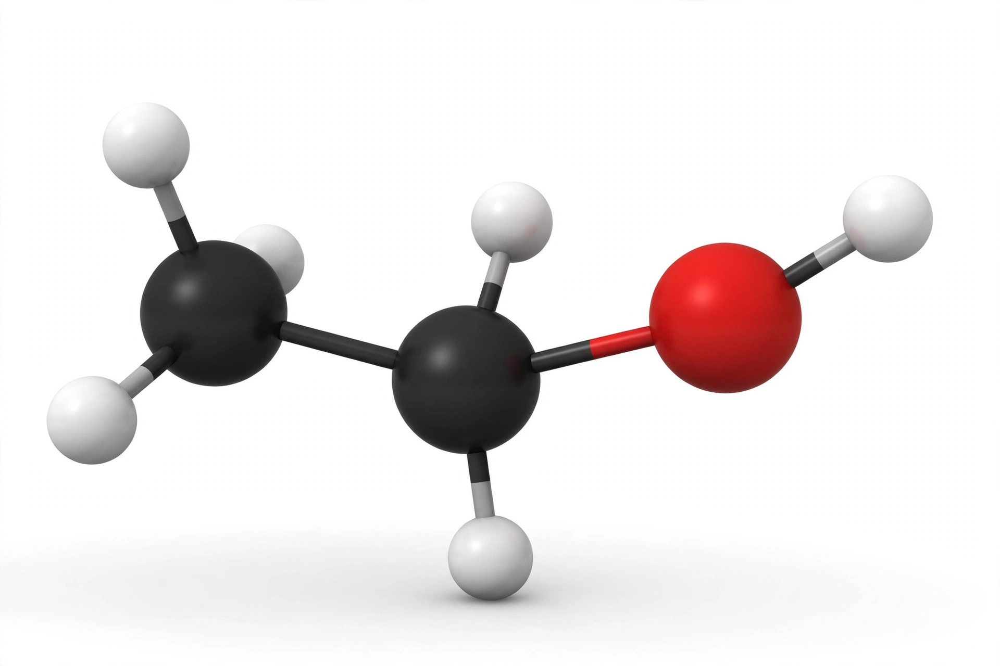

[Image placeholder: Ball-and-stick model of the ethanol molecule]In chemistry, an **alcohol** is an organic compound that carries at least one hydroxyl (−OH) functional group bound to a saturated carbon atom. The family named from the group includes methanol, isopropanol, glycols and sugars; but in everyday language 'alcohol' almost always means Ethanol, the intoxicating ingredient of beer, wine and spirits.
Ethanol (C₂H₅OH) is produced by fermentation of sugars by yeast and concentrated by distillation. It is a psychoactive drug and the world's most widely used recreational drug, a solvent and disinfectant, and increasingly a fuel. Methanol ('wood alcohol') and isopropanol ('rubbing alcohol') are alcohols too, but toxic to drink.
Alcohols are classified as primary, secondary or tertiary by the carbon bearing the −OH group. They are more soluble in water than hydrocarbons of similar size, have higher boiling points due to hydrogen bonding, and can be oxidised to aldehydes, ketones and carboxylic acids.
Alcohol consumption is causally linked by the WHO and medical literature to liver cirrhosis, several cancers, addiction (alcoholism) and injuries; health authorities increasingly advise that risk rises with dose. Historically, fermented drinks were a safer alternative to contaminated water, and distillation spread globally after the medieval period.